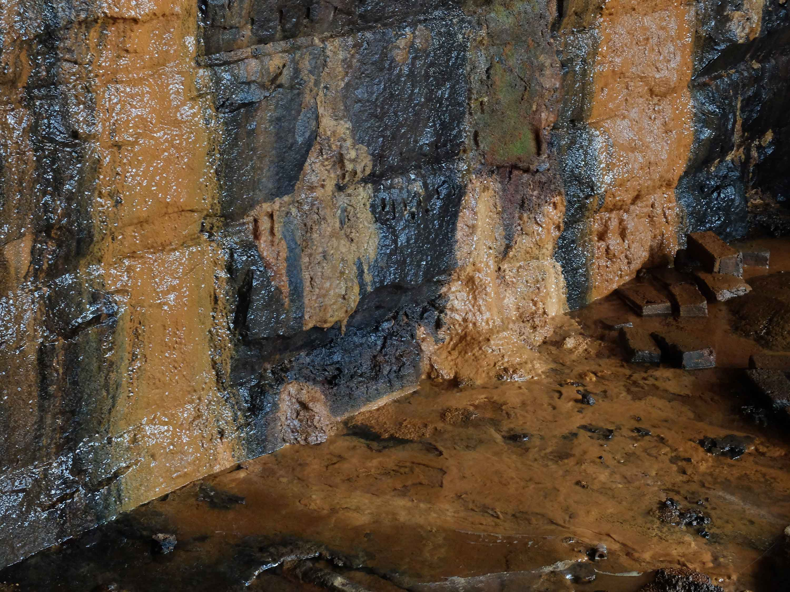
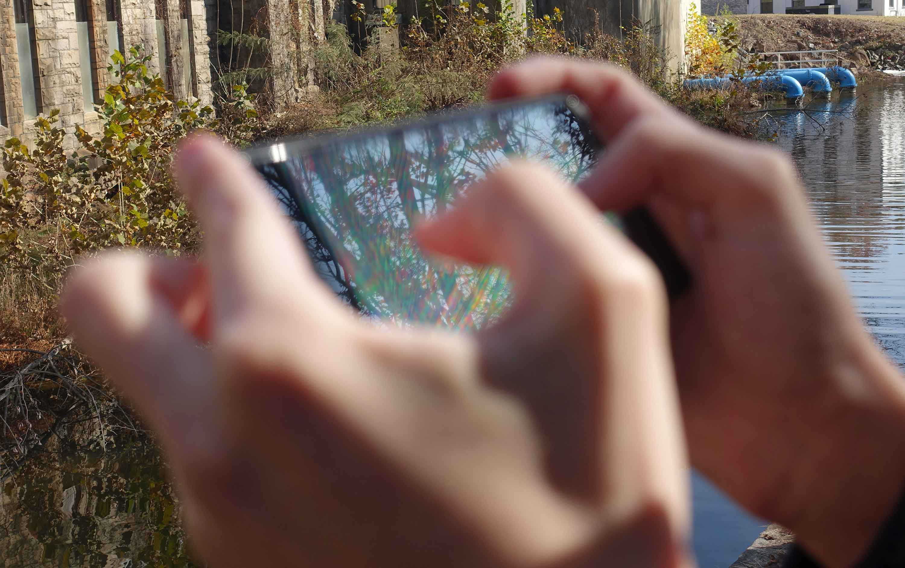
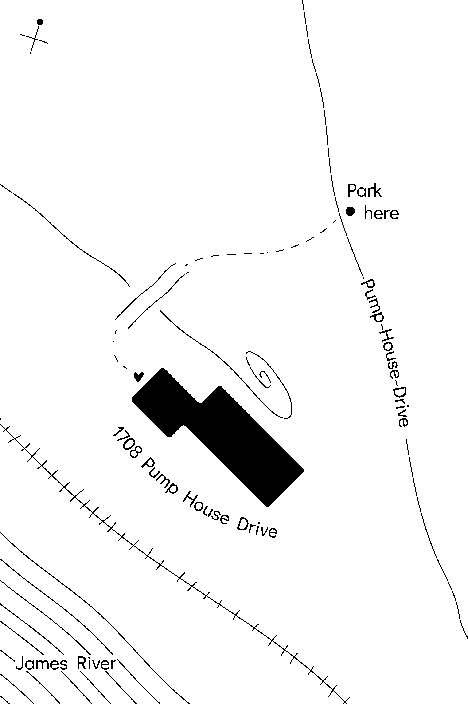

- 
- 
Sarah says, ❝Absence is the absence of presence. But presence is the absence of absence. Any perceived difference is, in fact, also a deep connection. In this way, opposing forces are unified, and the world becomes a cooperative web of interdependent pieces. ❞
Mariah says, ❝Their own kind of modernity, free of linearity, time flattened, time unstuck, everything happening at once. ❞
Jason says, ❝The grim reaper, a psychopomp, acts as a guide for the journey between stages of consciousness, a symbol of severing the physical or waking from the spiritual. The Dreamachine developed by Brion Gysin, a tool for sitting as well as consciousness expansion. ❞
Mystie says, ❝What is important is not there, what is important is not what is there but what is not there. ❞
Bushra, ❝says Spongy existence. ❞
June says,
❝o=(=(=(=(=(=(==)=)=)=)=)=)=)=o❞ ¦¦==========⎠___⎝===========¦¦ ⎠⎠'.'.'.';¦ | ¦;'.'.'.'⎝⎝ ¦'.'.'.'.';⎠ | ⎝ ;'.'.'.'.¦ ⎠⎠’.’.’;¦___❅_|______¦;'.'.'⎝⎝ ¦¦’.’.’;⎠____________⎝;'.'.'¦¦ ⎠====@❤︎ | ❤︎@====⎝ ¦'.'.';; | ❅ ;;'.'.'¦ ⎠'.'. | ❅ .'.'⎝ ¦'.'.' ❅ | '.'.'¦ ⎠'.'. | .'.'⎝ ¦'.'.'________|_________'.'.'¦ ⎠’.’. | .’.’⎝ ¦’.’.’ | ’.’.’¦ ⎠'.'. | ❅ .'.'⎝ ¦'.'.' ❅ | '.'.'¦ ⎠'.'. | .'.'⎝ ¦'.'.' ❅ | '.'.'¦ ⎠'.'.=========|==========.'.'⎝ ¦'.'.' ❅ '.'.'¦ ~ ~
Yutong says,
❝Black and white, machine and human, physical and digital, mind and body, life and death; Machine is a shadow of human; Human is the miniature of machine.❞
❤爱你如初
❤爱你如初
Julia says,
❝Every work is an archive,
Is it around you, or within you?
Did you see it, or was it a dream?
Last night I dreamed that I saw two words written,
And that I knew they were written by him,
And they said I'm sublime.❞
❝Every work is an archive,
Is it around you, or within you?
Did you see it, or was it a dream?
Last night I dreamed that I saw two words written,
And that I knew they were written by him,
And they said I'm sublime.❞
Feixue says,
❝Create a mixture,
Create my own,
Create a world of otherness,
Not a duplicate,
But adaptation and reproduction,
A colorful chaos,
Is where I live.❞
❝Create a mixture,
Create my own,
Create a world of otherness,
Not a duplicate,
But adaptation and reproduction,
A colorful chaos,
Is where I live.❞
Aidan says,
❝We leave the cave and make our way to the river.❞
A group show of friendship at the Pump House.
Dec 7-9, 12-7pm
This website is designed by June in collaboration with Aidan. Soundtrack by Aidan.
1708 Pump House Rd, Richmond, VA
©2019
Dec 7-9, 12-7pm
This website is designed by June in collaboration with Aidan. Soundtrack by Aidan.
1708 Pump House Rd, Richmond, VA
©2019
